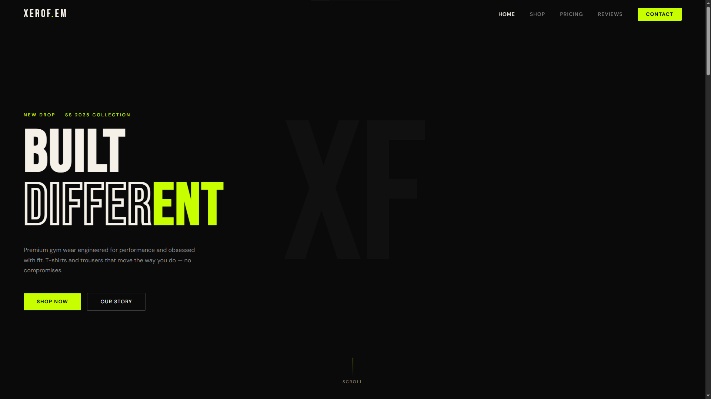
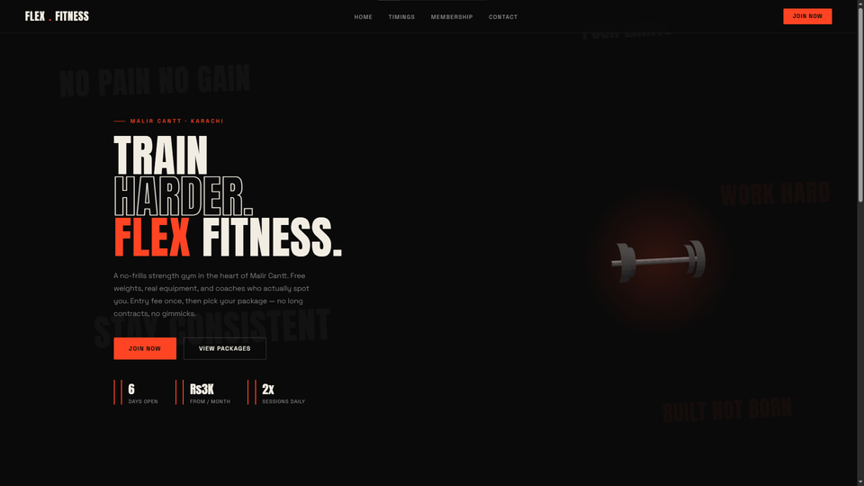

Based in Pakistan. Currently mastering the craft. Available for projets by late 2026
I am Hussain, a self-taught developer from Pakistan on a focused 2-year coding mission. I don't just build what you ask for. I study your business from every angle before I write a single line of code
XEROFEM is my first complete project. XEROFEM is a modern gymwear landing designed and developed as my first complete front-end project using HTML and CSS.
The goal of the project was to create a premium fitness brand experience with strong visual identity, clean typography, responsive layouts,
and modern UI principles inspired by high-end commercial brands.
The website features a fully structured multi=section layout including a hero page, product showcase, pricing system, customer reviewas, and contact interface.
Special attention was given to spacing, color contrast, animations, hover interactions, and brand consistency, to create a professional, and immersive user experience.
This project marked the beginning of my journey into front-end developpment and helped me build foundaation skills in responsive web design, layout structuring,
CSS styling systems, and user focused interface design.

Flex Fitness Gym — Local Business Website A real client project built for Flex Fitness Gym in Malir Cantt, Karachi. Designed with a dark, minimal aesthetic and lime accent tones to feel bold and modern rather than generic. The site covers everything a gym-goer needs — timings, membership packages, and a signup form — in a clean, distraction-free layout. This project marked my shift from personal practice pieces to building for an actual paying client.

Want to work together? Reach out:
magsihussain1509@gmail.com\